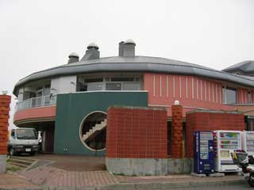
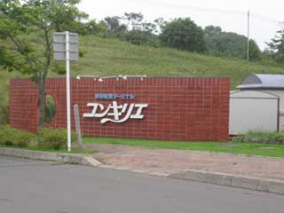
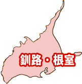

水族館がある道の駅。と言ってもごく少量ですが。
物産に行きたかったけど、柊我が怪我したのでこれだけ。。。
今度ゆっくり行きたいですね。
|  |  |
|---|
|  |
|
|||||||||||||||||||||
|---|---|---|---|---|---|---|---|---|---|---|---|---|---|---|---|---|---|---|---|---|---|---|
| ６８ | |||
|---|---|---|---|
丹頂で有名な阿寒の道の駅 資料館は有料でどうぞ 冬に来るべきなのかな～
| |||
| ８３ | |||
|---|---|---|---|
水族館がある道の駅。と言ってもごく少量ですが。 物産に行きたかったけど、柊我が怪我したのでこれだけ。。。 今度ゆっくり行きたいですね。
| |||
| ５６ | |||
|---|---|---|---|
道の駅弁第壱号がある道の駅です。 とは言っても豚丼ですが。 海がすぐそば。故に霧深し
| |||
| ５９ | |||
|---|---|---|---|
おそらく日本最東端の道の駅でしょう。 建物がスゴイキレイで、風蓮湖？を眺める事ができます。 バードウォッチャーもいましたし。 エスカロップ食べられます。
|
|||